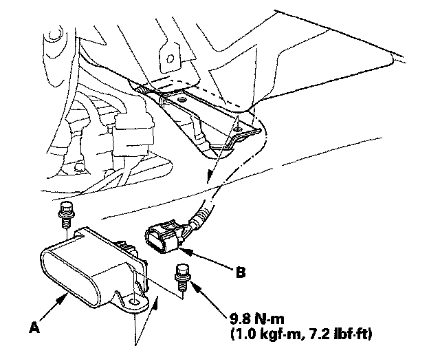

Lateral Accelerometer: Service and Repair
Yaw Rate-Lateral Acceleration Sensor ReplacementNOTE:
^ Do not damage or drop the sensor as it is sensitive.
^ Do not use an air or electric impact tool.
1. Remove the center console.
2. Remove the yaw rate-lateral acceleration sensor (A) fixing bolts.

3. Pull out the yaw rate-lateral acceleration sensor, then disconnect the sensor connector (B).
4. Install the sensor in the reverse order of removal.
5. Do the VSA sensor neutral position memorization.